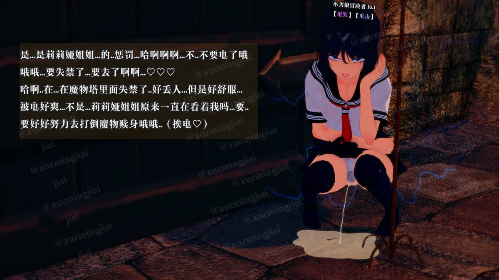

哦哦哦...来自莉莉娅姐姐的电击♡
猝不及防...像女孩子一样蹲着高潮失禁了...好舒服♡
似乎是被锁的太久了...又经历过这么多涩情的战斗，身体也变得敏感起来，思维也越来越女性化...不...不能再这样下去了哦噢..（电击）
要被电傻了啊啊啊♡♡♡

猝不及防...像女孩子一样蹲着高潮失禁了...好舒服♡
似乎是被锁的太久了...又经历过这么多涩情的战斗，身体也变得敏感起来，思维也越来越女性化...不...不能再这样下去了哦噢..（电击）
要被电傻了啊啊啊♡♡♡

又复活了..哈啊...
中间这扇门现在打开的话..又会遇到那只僵尸娘...不能再去败北（白给）了...!
也该继续前进了..不过脑海里为什么忽然会出现，离开以后再回来就可能找不到这扇门的想法？
要不还是想办法做个记号之类的吧..可是我手中没有笔啊，该怎么办呢？
啊啊啊啊啊...♡
怎么..这么突然的电击♡ https://t.co/B4mmcOrVGU
中间这扇门现在打开的话..又会遇到那只僵尸娘...不能再去败北（白给）了...!
也该继续前进了..不过脑海里为什么忽然会出现，离开以后再回来就可能找不到这扇门的想法？
要不还是想办法做个记号之类的吧..可是我手中没有笔啊，该怎么办呢？
啊啊啊啊啊...♡
怎么..这么突然的电击♡ https://t.co/B4mmcOrVGU